# install.packages("devtools") # nolint
# devtools::install_github("thomasp85/patchwork") # nolintData Visualization with GGPLOT2 Extensions
patchwork
The goal of patchwork is to make it ridiculously simple to combine separate ggplots into the same graphic. As such it tries to solve the same problem as gridExtra::grid.arrange() and cowplot::plot_grid but using an API that incites exploration and iteration, and scales to arbitrarily complex layouts.
Installation
Load
base::library(package = dplyr)
base::library(package = ggplot2)
base::library(package = patchwork)
Attaching package: 'dplyr'
The following objects are masked from 'package:stats':
filter, lag
The following objects are masked from 'package:base':
intersect, setdiff, setequal, union
Example
bp_species <- penguins %>%
ggplot2::ggplot(data = .) +
ggplot2::geom_bar(
mapping = ggplot2::aes(
x = species,
fill = species
)
)bp_sex <- penguins %>%
ggplot2::ggplot(data = .) +
ggplot2::geom_bar(
mapping = ggplot2::aes(
x = sex,
fill = sex
)
)bp_island <- penguins %>%
ggplot2::ggplot(data = .) +
ggplot2::geom_bar(
mapping = ggplot2::aes(
x = island,
fill = island
)
)bp_species + bp_sex + bp_island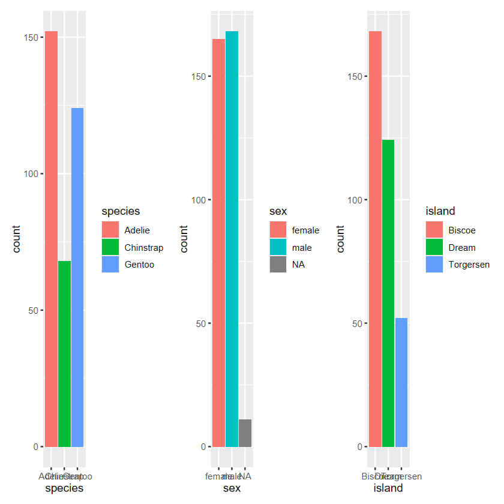
(bp_species | bp_sex) / bp_island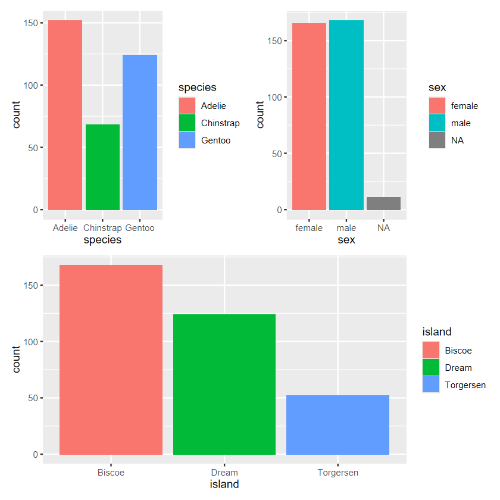
ggpubr
ggplot2, by Hadley Wickham, is an excellent and flexible package for elegant data visualization in R. However the default generated plots requires some formatting before we can send them for publication. Furthermore, to customize a ggplot, the syntax is opaque and this raises the level of difficulty for researchers with no advanced R programming skills.
The ggpubr package provides some easy-to-use functions for creating and customizing ggplot2- based publication ready plots.
Installation
# utils::install.packages("ggpubr") # nolint# if (!require(devtools)) install.packages("devtools") # nolint
# devtools::install_github("kassambara/ggpubr") # nolintLoad
base::library(package = "dplyr")
base::library(package = "ggplot2")
base::library(package = "ggpubr")Example
penguins %>%
stats::na.omit(object = .) %>%
ggpubr::ggdensity(
data = .,
x = "body_mass",
add = "mean",
fill = "species",
rug = TRUE,
palette = c("red", "blue", "green"),
title = "Distribution of Body Mass by Species",
xlab = "Species",
ylab = "Density of Body Mass"
)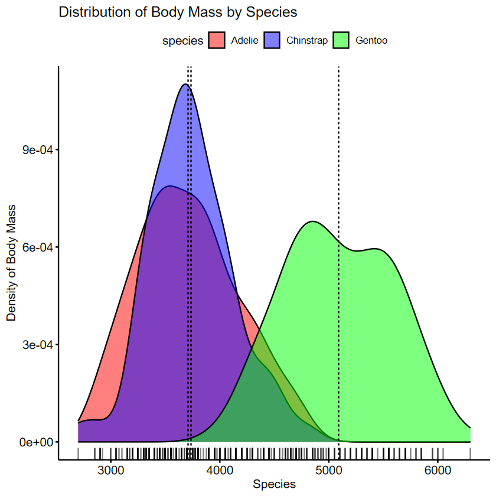
base::options(repr.plot.width = 15, repr.plot.height = 6)
penguins %>%
stats::na.omit(object = .) %>%
ggpubr::gghistogram(
data = .,
x = "body_mass",
fill = "sex",
facet.by = "species",
add = "mean",
rug = TRUE,
palette = c("red", "blue"),
title = "Distribution of Body Mass by Species",
xlab = "Body Mass (g)",
ylab = "Frequency",
) +
ggplot2::theme(panel.spacing = unit(2, "lines"))Warning message:
"Using `bins = 30` by default. Pick better value with the argument `bins`."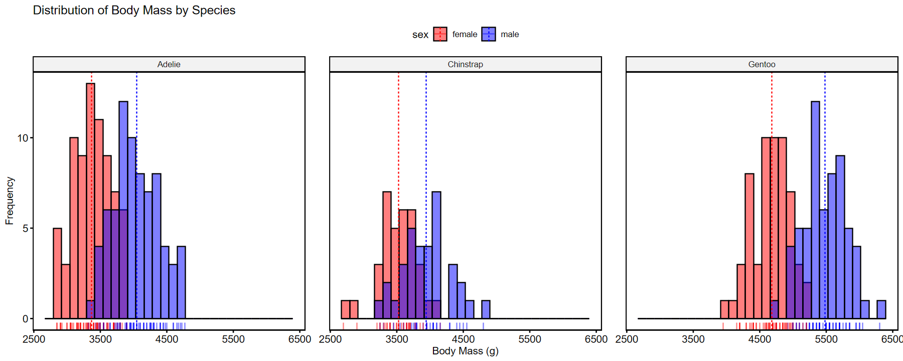
base::options(repr.plot.width = 6, repr.plot.height = 6)
penguins %>%
stats::na.omit(object = .) %>%
ggpubr::ggboxplot(
data = .,
x = "sex",
y = "body_mass",
width = 0.5,
add = "jitter",
shape = "sex",
fill = "sex",
color = "brown",
palette = base::c("red", "blue"),
title = "Distribution of Body Mass by Species and Sex",
xlab = "Species",
ylab = "Body Mass (g)"
) +
ggpubr::stat_compare_means(
comparisons = base::list(base::c("female", "male"))
)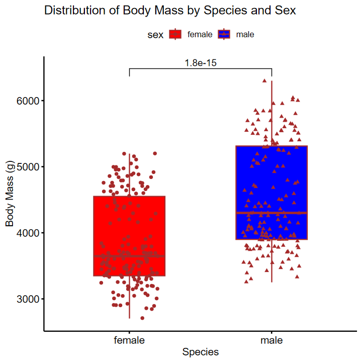
penguins %>%
stats::na.omit(object = .) %>%
ggpubr::ggviolin(
data = .,
x = "species",
y = "body_mass",
fill = "species",
add = "boxplot",
add.params = base::list(fill = "white"),
palette = base::c("red", "blue", "green")
) +
ggpubr::stat_compare_means(
comparisons = base::list(
base::c("Adelie", "Chinstrap"),
base::c("Adelie", "Gentoo"),
base::c("Chinstrap", "Gentoo")
)
)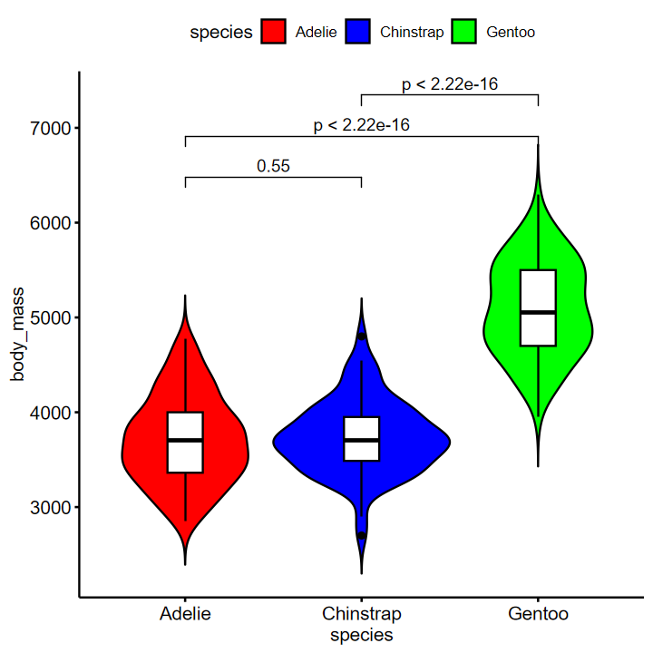
ggally
Installation
# utils::install.packages("GGally") # nolintLoad
base::library(package = dplyr)
base::library(package = ggplot2)
base::library(package = GGally)Example
base::options(repr.plot.width = 20, repr.plot.height = 20)
penguins %>%
stats::na.omit(object = .) %>%
GGally::ggpairs(
data = .,
mapping = aes(fill = species, color = species)
)`stat_bin()` using `bins = 30`. Pick better value with `binwidth`. `stat_bin()` using `bins = 30`. Pick better value with `binwidth`. `stat_bin()` using `bins = 30`. Pick better value with `binwidth`. `stat_bin()` using `bins = 30`. Pick better value with `binwidth`. `stat_bin()` using `bins = 30`. Pick better value with `binwidth`. `stat_bin()` using `bins = 30`. Pick better value with `binwidth`. `stat_bin()` using `bins = 30`. Pick better value with `binwidth`. `stat_bin()` using `bins = 30`. Pick better value with `binwidth`. `stat_bin()` using `bins = 30`. Pick better value with `binwidth`. `stat_bin()` using `bins = 30`. Pick better value with `binwidth`. `stat_bin()` using `bins = 30`. Pick better value with `binwidth`. `stat_bin()` using `bins = 30`. Pick better value with `binwidth`. `stat_bin()` using `bins = 30`. Pick better value with `binwidth`. `stat_bin()` using `bins = 30`. Pick better value with `binwidth`. `stat_bin()` using `bins = 30`. Pick better value with `binwidth`.
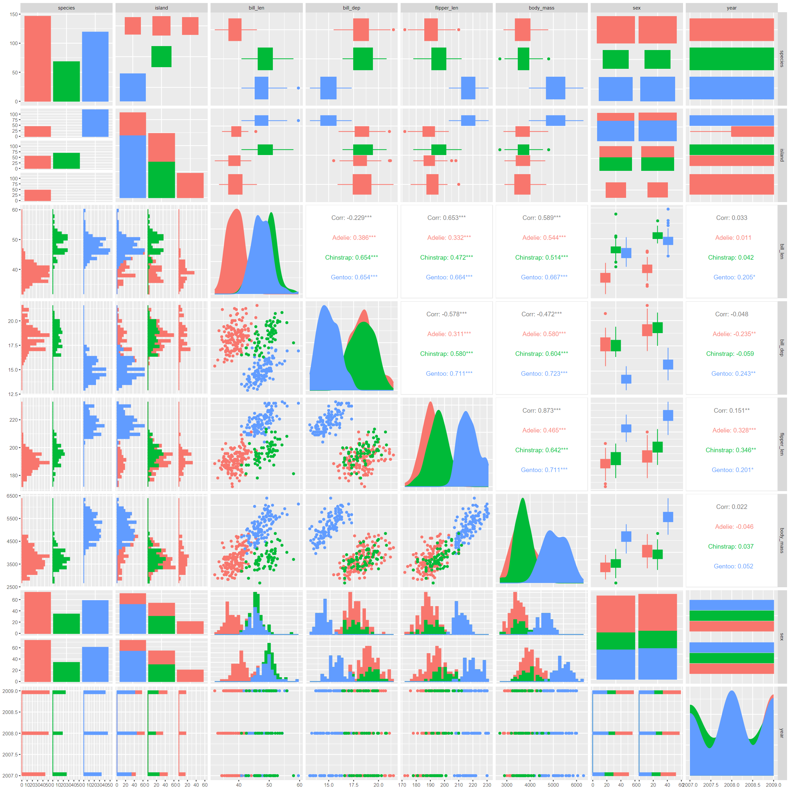
colnames(penguins)- 'species'
- 'island'
- 'bill_len'
- 'bill_dep'
- 'flipper_len'
- 'body_mass'
- 'sex'
- 'year'
base::options(repr.plot.width = 12, repr.plot.height = 12)
penguins %>%
stats::na.omit(object = .) %>%
GGally::ggpairs(
data = .,
mapping = ggplot2::aes(color = species),
columns = c("bill_len", "bill_dep", "flipper_len", "body_mass"),
# upper = "blank", # nolint
# diag = NULL, # nolint
)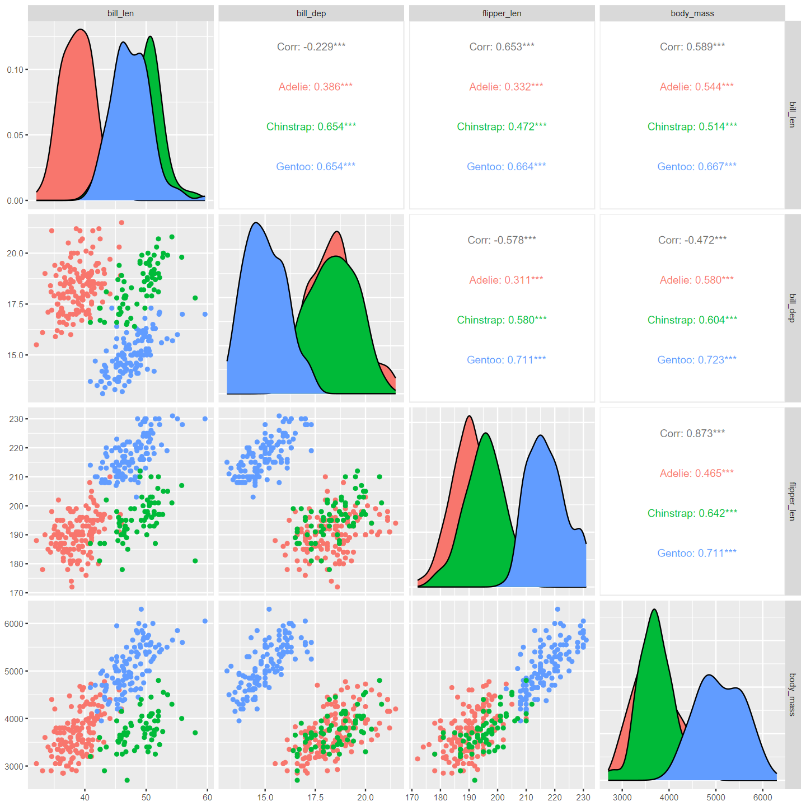
penguins$year <- base::as.factor(x = penguins$year)
penguins %>%
stats::na.omit(object = .) %>%
GGally::ggpairs(
data = .,
columns = c("species", "island", "sex", "year"),
mapping = ggplot2::aes(color = species),
)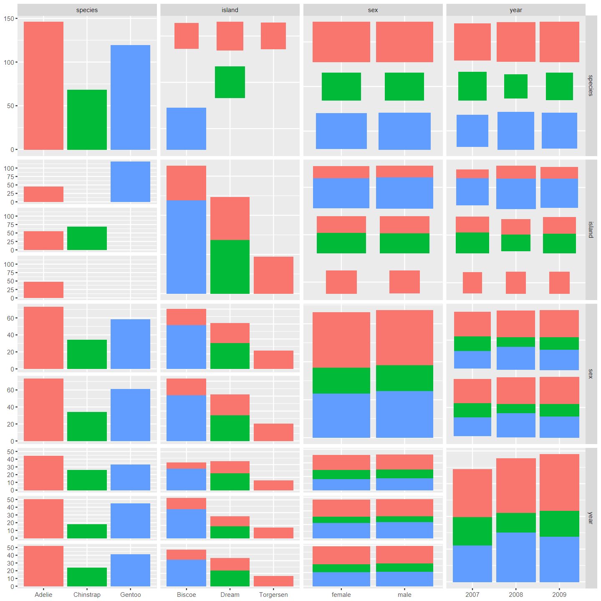
For more examples, visit https://ggobi.github.io/ggally/articles/
ggstatplot
ggstatsplot is an extension of ggplot2 package for creating graphics with details from statistical tests included in the information-rich plots themselves. In a typical exploratory data analysis workflow, data visualization and statistical modeling are two different phases: visualization informs modeling, and modeling in its turn can suggest a different visualization method, and so on and so forth. The central idea of ggstatsplot is simple: combine these two phases into one in the form of graphics with statistical details, which makes data exploration simpler and faster.
- https://github.com/IndrajeetPatil/ggstatsplot
- https://indrajeetpatil.github.io/ggstatsplot/
- https://indrajeetpatil.github.io/statsExpressions/articles/stats_details.html
Installation
After installation, the application have to be restarted!
# utils::install.packages("ggstatsplot") # nolintLoad
base::library(package = dplyr)
base::library(package = ggplot2)
base::library(package = ggstatsplot)You can cite this package as:
Patil, I. (2021). Visualizations with statistical details: The 'ggstatsplot' approach.
Journal of Open Source Software, 6(61), 3167, doi:10.21105/joss.03167
Example
penguins %>%
ggstatsplot::ggbetweenstats(
data = .,
x = species,
y = body_mass,
title = "Distribution of Body Mass Across Penguins Species",
xlab = "Sex",
ylab = "Body Mass"
)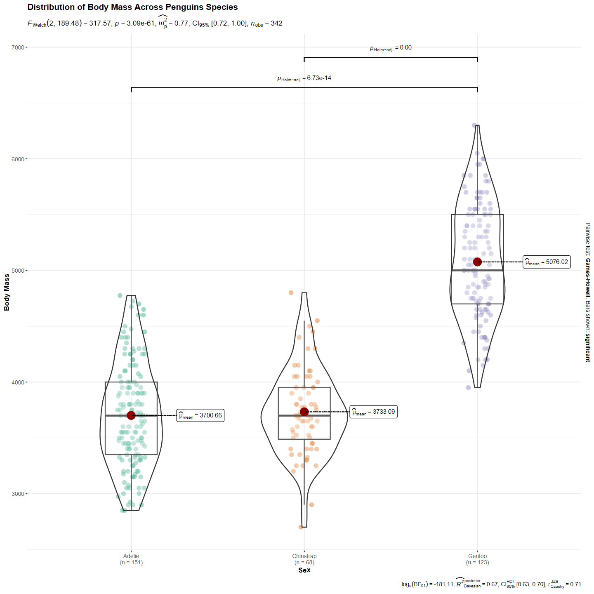
penguins %>%
ggstatsplot::ggbetweenstats(
data = .,
x = sex,
y = body_mass,
title = "Distribution of Body Mass Across Penguins Sex"
)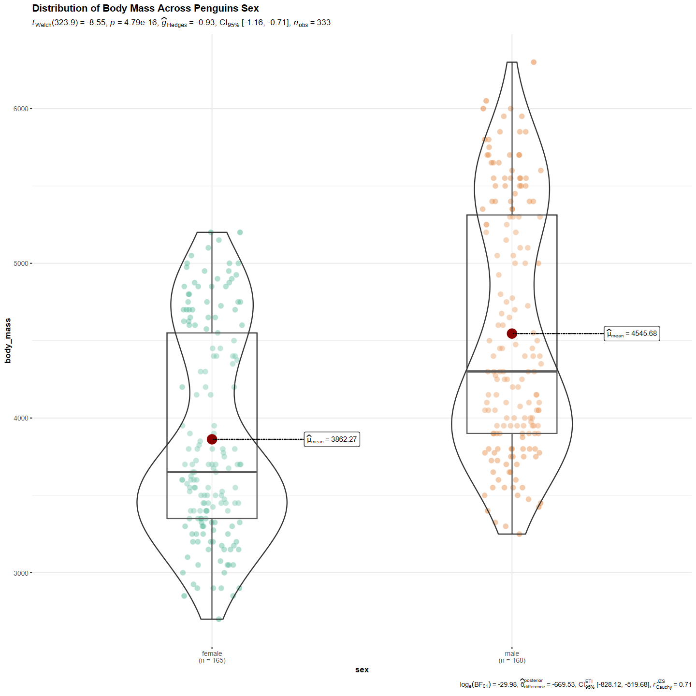
# Set default figure size (in inches)
base::options(repr.plot.width = 18, repr.plot.height = 6)
penguins %>%
ggstatsplot::grouped_ggbetweenstats(
data = .,
x = sex,
y = body_mass,
grouping.var = species
)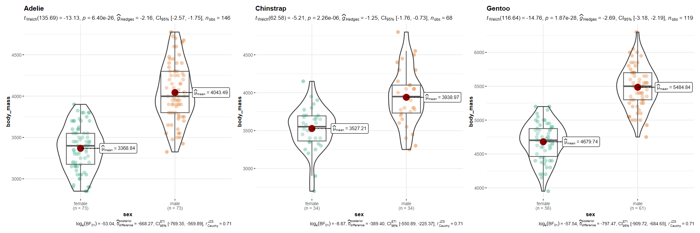
base::options(repr.plot.width = 8, repr.plot.height = 6)
penguins %>%
ggstatsplot::ggscatterstats(
data = .,
x = flipper_len,
y = body_mass,
xsidehistogram.args = list(bins = 15, linewidth = 1, fill = "red", color = "black"), # nolint
ysidehistogram.args = list(bins = 15, linewidth = 1, fill = "blue", color = "black"), # nolint
point.args = list(pch = 21, size = 4, stroke = 1, fill = "cyan", color = "blue"), # nolint
title = "Relationship between Flipper Length and Body Mass",
xlab = "Flipper Length (mm)",
ylab = "Body Mass (g)"
)Registered S3 method overwritten by 'ggside':
method from
+.gg ggplot2
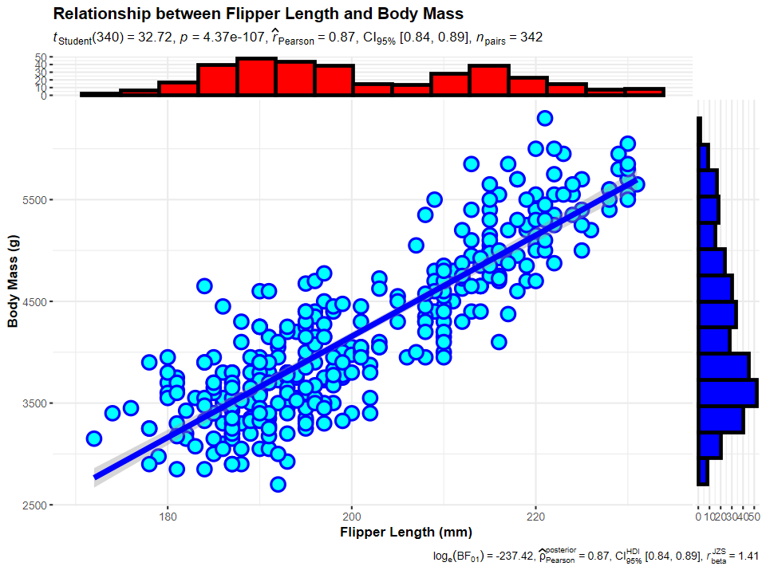
base::options(repr.plot.width = 18, repr.plot.height = 6)
penguins %>%
ggstatsplot::grouped_ggscatterstats(
data = .,
x = flipper_len,
y = body_mass,
grouping.var = species,
xsidehistogram.args = list(bins = 15, linewidth = 1, fill = "red", color = "black"), # nolint
ysidehistogram.args = list(bins = 15, linewidth = 1, fill = "blue", color = "black"), # nolint
point.args = list(pch = 21, size = 4, stroke = 1, fill = "cyan", color = "blue"), # nolint
xlab = "Flipper Length (mm)",
ylab = "Body Mass (g)"
)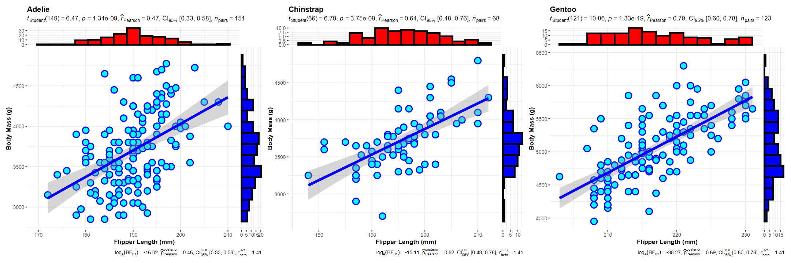
base::options(repr.plot.width = 8, repr.plot.height = 6)
penguins %>%
dplyr::select(.data = ., dplyr::where(is.numeric)) %>%
ggstatsplot::ggcorrmat(
data = .,
type = "robust", # robust correlation
colors = c("red", "white", "green"),
matrix.type = "full",
title = "Correlation Heatmap"
)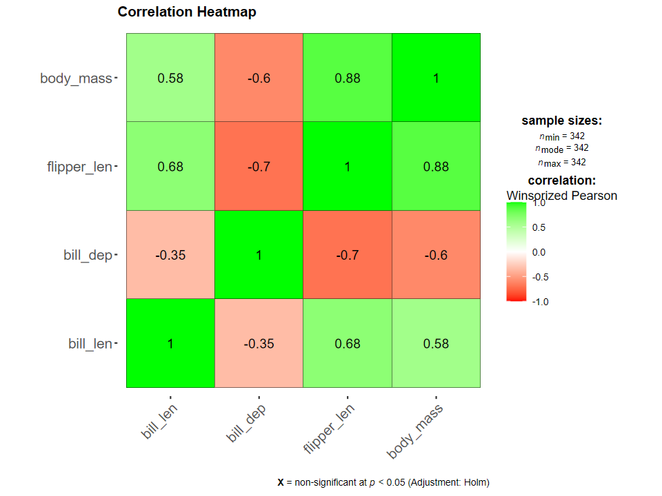
base::options(repr.plot.width = 18, repr.plot.height = 6)
penguins %>%
ggstatsplot::grouped_ggcorrmat(
data = .,
type = "robust", # robust correlation
grouping.var = species,
colors = c("red", "white", "green"),
matrix.type = "full",
)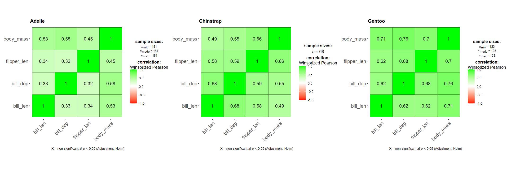
base::options(repr.plot.width = 8, repr.plot.height = 6)
penguins %>%
ggstatsplot::ggbarstats(
data = .,
x = sex,
y = species,
)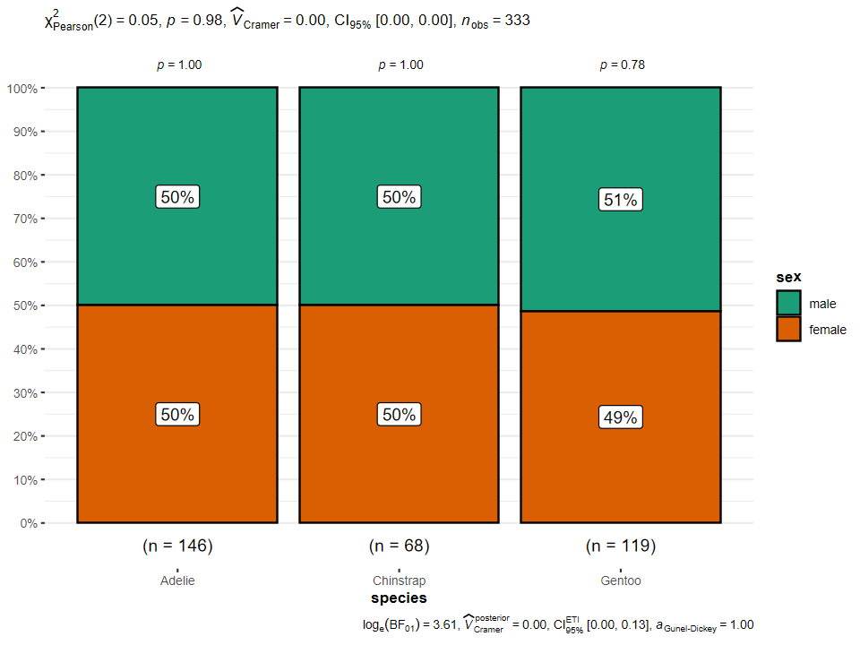
base::options(repr.plot.width = 18, repr.plot.height = 6)
penguins %>%
ggstatsplot::grouped_ggbarstats(
data = .,
x = sex,
y = species,
grouping.var = island
)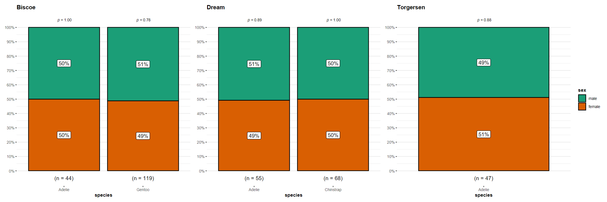
model <- stats::lm(formula = body_mass ~ species * sex, data = penguins)
base::summary(model)
Call:
stats::lm(formula = body_mass ~ species * sex, data = penguins)
Residuals:
Min 1Q Median 3Q Max
-827.21 -213.97 11.03 206.51 861.03
Coefficients:
Estimate Std. Error t value Pr(>|t|)
(Intercept) 3368.84 36.21 93.030 < 2e-16 ***
speciesChinstrap 158.37 64.24 2.465 0.01420 *
speciesGentoo 1310.91 54.42 24.088 < 2e-16 ***
sexmale 674.66 51.21 13.174 < 2e-16 ***
speciesChinstrap:sexmale -262.89 90.85 -2.894 0.00406 **
speciesGentoo:sexmale 130.44 76.44 1.706 0.08886 .
---
Signif. codes: 0 '***' 0.001 '**' 0.01 '*' 0.05 '.' 0.1 ' ' 1
Residual standard error: 309.4 on 327 degrees of freedom
(11 observations deleted due to missingness)
Multiple R-squared: 0.8546, Adjusted R-squared: 0.8524
F-statistic: 384.3 on 5 and 327 DF, p-value: < 2.2e-16ggstatsplot::ggcoefstats(x = model)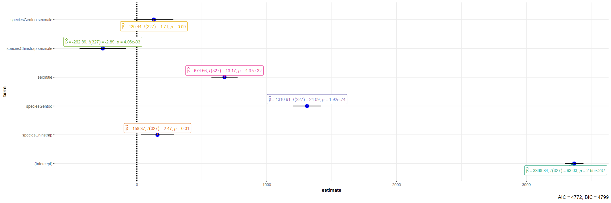
esquisse
This addin allows you to interactively explore your data by visualizing it with the ggplot2 package. It allows you to draw bar plots, curves, scatter plots, histograms, boxplot and sf objects, then export the graph or retrieve the code to reproduce the graph.
Installation
# utils::install.packages(pkgs = c("esquisse", "shiny", "shinyWidgets")) # nolintLoad
base::library(package = esquisse)Example
Launch Windows PowerShell in Windows Terminal
rterm.exeAfter Launching R Terminal
esquisse::esquisser(datasets::penguins)# esquisse::esquisse(penguins) # nolint